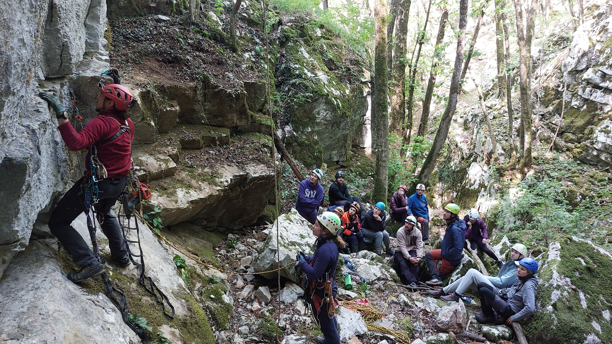
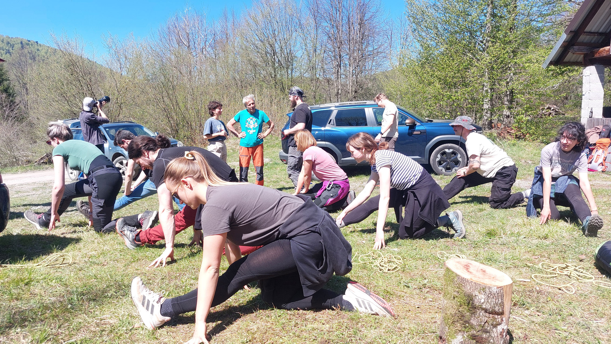
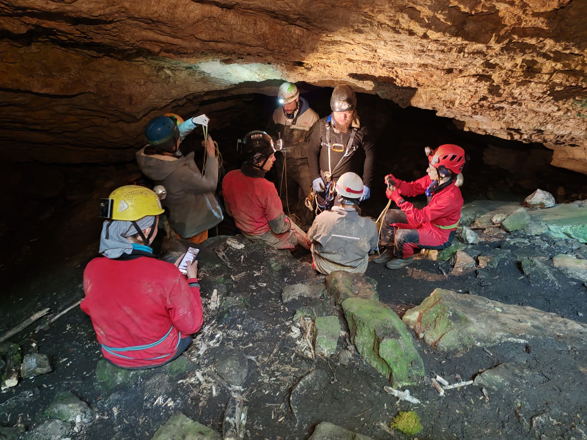
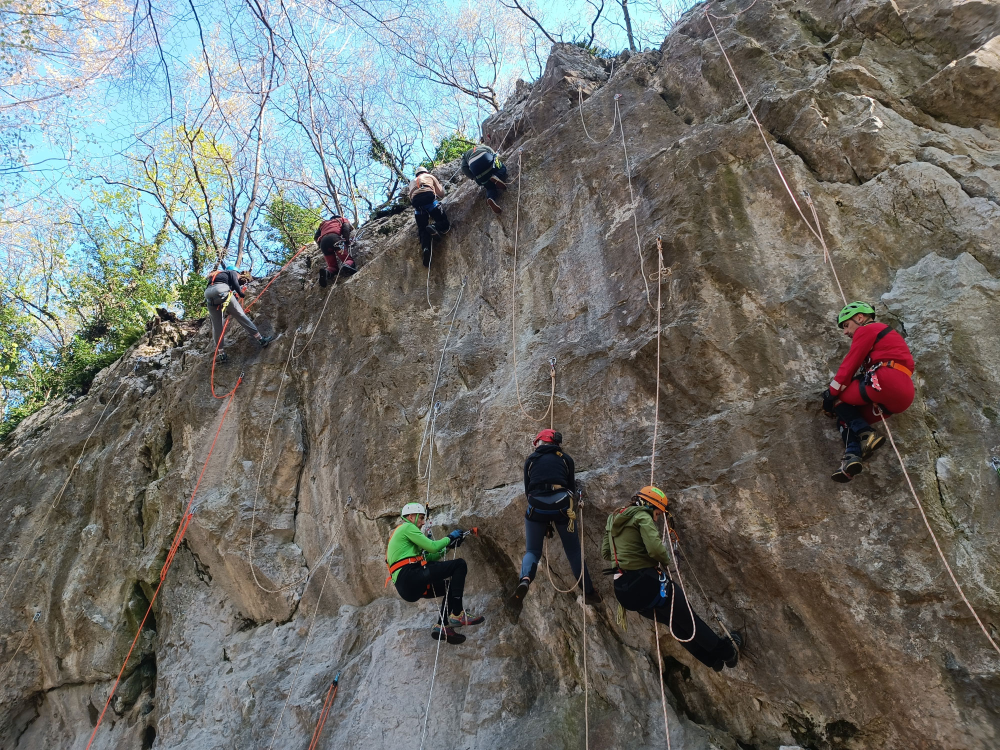
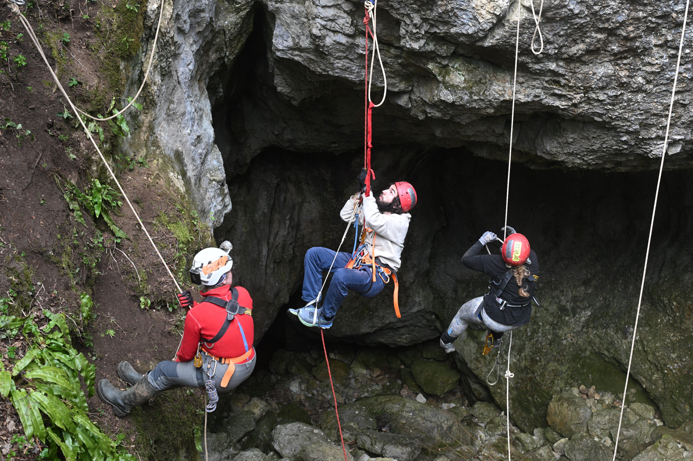

Speleoškola nije tečaj gledanja u PowerPoint.
Predavanja su tek početak. Učiš opremu, kretanje po užetu, sigurnost i rad na terenu, a onda sve to provjeravaš vani — na stijeni, u špilji, jami i najčešće u nekoj količini blata.
56. zagrebačka speleoškola je završena.
Novi termin, program, cijena i način prijave bit će objavljeni na ovoj stranici i u SOV novostima kada budu poznati.
Prvo naučiš što radiš. Onda to radiš.
Škola kombinira teorijska predavanja u Klaićevoj, praktične vježbe s opremom i terenske izlete. Na posljednjem izdanju predavanja su bila srijedom, a praktični dio kroz jednodnevne i dvodnevne izlete tijekom pet vikenda.
Na terenu se radi uz instruktore: od prvog pravilnog oblačenja opreme i osnovnih čvorova do kretanja po užetu i ulaska u speleološke objekte. Točan raspored i sadržaj mogu se mijenjati od škole do škole.
Klaićeva
Teorija, upoznavanje s opremom, sigurnošću, tehnikama, dokumentiranjem i svime što treba razumjeti prije terena.
Vježbalište
Čvorovi, spuštanje i penjanje po užetu, prelazak sidrišta i ponavljanje dok pokreti ne postanu sigurni i smisleni.
Vikendi
Jednodnevni i dvodnevni izleti, rad u ekipi i prve stvarne situacije izvan uredne dvorane i suhe opreme.
Podzemlje
Ulazak u špilje i jame uz instruktore, primjena naučenog i razumijevanje kako se u objektu kreće, komunicira i ponaša.
Što se uči
Program nije popis trikova za spuštanje u jamu. Cilj je da razumiješ opremu, rizike, ekipu i teren na kojem radiš.
Točan program i uvjeti objavljuju se uz svako novo izdanje škole.
Ne moraš već biti planinar, penjač ni profesionalni ljubitelj blata.
Trebaš biti spreman učiti, redovito dolaziti, raditi u ekipi i prihvatiti da se praktični dio odvija vani, po različitom vremenu i na terenu koji nije uvijek udoban.





56. zagrebačka speleoškola — 2026.
Ovi datumi i cijene odnosili su se isključivo na školu održanu 2026. i ne predstavljaju najavu sljedećeg izdanja.
- Trajanje
- 25. 3. – 3. 5. 2026.
- Teorija
- Srijedom, 18:00 – 20:30, Klaićeva 42/1
- Praksa
- Jednodnevni i dvodnevni izleti tijekom pet vikenda
- Cijena 2026.
- 150 € zaposleni / 120 € studenti
- Uključeno
- Osiguranje od nezgode i potrebna speleološka oprema
- Voditeljica
- Gorana Perić
Zanima te kad kreće?
Pošalji poruku. Nećemo izmišljati datum dok ga nema, ali ćemo odgovoriti na pitanja i uputiti te gdje pratiti novu objavu.